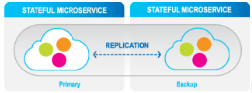

High availability, replication and persistence with optional data persistence and multi-datacenter replication
Full data life-cycle management on RAM, SSD/Flash, disk and external data stores, also supporting multiple data tiers
Supports an unlimited number of advanced indexes such as Exact, Range, Collections, Compound, Text, and Geo-spatial for optimal performance, with full SQL compliance. Unlike key-value stores that may need to duplicate the entire data store for each defined index,
Supports a variety of data models, including POJO, Documents, and Key/Value
Seamlessly scales up and out with no downtime
Can be deployed on-premises, in the cloud, or in a hybrid environment using its own service grid orchestration mechanism
Easily integrates with BI tools such as Tableau, Looker, and PowerBI
Architecture of
Refer to our
Data is stored in multiple data storage tiers — hot (in-memory), and warm (SSD). User-defined business rules place the most important data (not necessarily the most frequently accessed data) in hot storage, while other data can be in warm storage. GigaSpaces manages the full data lifecycle by automatically storing the relevant data in the relevant tiers, federating the queries under the hood to gather all the data in optimal latency and evicting the data according to various policies, from least-recently-used (LRU) to user custom policies.


Highly Available partitions with primary backup instances
High availability is achieved through the following levels with primary and backup instances:
Partition Level: Highly-available partitions with synchronic data replication between primary and backup instances for in-memory high availability.
Cluster Level: Tier storage and disk persistence, together with built-in mirroring service to an external database or disk, including initial load and store to database, delivering disk persistence to any storage class or database.
Site Level: Efficient asynchronous data replication (active-passive or active-active) between sites or regions, including hybrid environment for conflict resolution and disaster recovery.
Multi-Region Replication is implemented for disaster recovery planning, where each site is distant from the other sites, even on a different continent; for failover scenarios when one site acts as a failover target for another, or to maintain data locality for performance or regulations. For more information, see Multi-Region Replication.
The distributed WAN Gateway enables bidirectional replication of data between cloud repositories or to and from cloud storage. This distributed WAN Gateway is totally stateless, ensuring no loss of data. Transactions at the local site are replicated in atomic manner in the correct order to the remote sites. Site bootstrapping ensures that once a site starts, it can reload its entire data or specific data from a remote site without introducing data consistency problems.
The WAN Gateway replication utilizes a custom plugin that allows users to filter or modify data before it is replicated, and also after it has been replicated at each source or target node. In addition, the WAN replication topology can be updated in runtime - adding or removing remote sites does not result in system shutdown.
Space Data Source: Handles the pre-loading of data and the lazy load of data from from the persistence layer
Space Synchronization Endpoint: Handles changes made within the space delegation to the persistence layer
This Space persistence provides classes which can be extended and then used to load and store data in an existing data source. Data is loaded from the data source during space initialization, after which the application works with the space directly.

The GigaSpaces mirror service (write behind) provides reliable asynchronous persistence. This allows for the asynchronous delegation of the operations conducted with the In-Memory-Data-Grid (IMDG) into a backend database, significantly reducing the performance overhead. This service ensures that data will not be lost in the event of a failure.
A mirror service can be attached to an application, providing fine-grained control of the objects that need to be persisted, without affecting the real-time portion of the app in either configuration or code. The mirror does not require a backup instance since it does not maintain any state. The actual state of the latest committed database transaction is stored within the primary and the backup space instances, not in the mirror.

Mirror Service (Write Behind)
Vertical scaling allows the increase or decrease of the amount of RAM and CPU for an active GigaSpaces cluster – such as the addition of memory or CPUs to an existing physical node - without downtime. Vertical scaling offers many advantages:
Resources are located in close physical proximity, enabling faster access to related data such as credit/debit tables that are updated in a closed (atomic) unit of work
A performance gain, because more RAM and CPUs are available for each update
Horizontal scaling allows adding and reducing the number of partitions used for an application, such as the creation of additional partitions in the same server, or the addition/removal of servers. Horizontal scaling supports linear increases in capacity on-the-fly; RAM or CPU capacity can be increased or decreased while maintaining a constant RAM/CPU ratio.
The REST Manager API and UI tools enable management of the
The GigaSpaces CLI enables users to administer local, remote, and cloud-based application environments, and for maintenance tasks. The CLI is based on the REST Manager API.
The Java SDK offers the best expected performance, with full coverage of Space interfaces and functions.
Server-side Java and client-side .Net operations available in Java can be performed in .NET.
The data is saved in Java within the Space. The .NET Integration supports C# on both .NET Framework and .NETCore.
To connect with the Space, the GigaSpaces JDBC API allows applications to interact with the Space, using JDBC or ODBC drivers. A query processor transparently translates SQL queries into legal Space operations. No integration is required, the application can just point to the GigaSpaces JDBC driver like any other JDBC driver.

Easy deployment and provisioning across any scale, on cloud, on-premises and hybrid environments
Hot rolling and automated deployment, upgrading, monitoring, scaling and recovery
Support of Kubernetes, Red Hat OpenShift and alternative elastic orchestration systems, with no need for third-party components, reducing TCO and enabling the handling of unexpected peaks.
Efficient and cost-effective data replication across regions/clouds or between on-premises and cloud deployments.